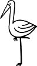

"Her insanın muhakkak kökleri olmalı" diye yazmış bir okurum İstanbul'dan, "sizin kökleriniz buradaysa siz niçin Amerika'dasınız, yok eğer kökleriniz oradaysa romanlarınızda burayı, Türk kültürünü nasıl bu kadar zengin işleyebiliyorsunuz?" Cevabım: "Tuba ağacı." Mesnevi'de anlatıldığı üzre bir gün bir bilge, kendi türleriyle uçmayı reddeden iki ayrı cins kuşa rastlar yol kenarında. Hayli merak eder bu iki farklı yaratığın nasıl olup da kendi aileleriyle, ait oldukları yerlerde yaşamak istemediklerini, nasıl olup da bir "yabancı"yı kendi kardeşlerine yeğlediklerini. Biri karga, biri leylek... O kadar farklıdır ki kuşlar, ihtimal veremez birbirlerini sevdiklerine, türdeşleriyle değil de birbirleriyle uçmayı yeğlediklerine. Öyle ya, karga dediğin kargalarla uçmalıdır, leylek dediğinse leyleklerle. Yaklaşır ve merakla inceler kuşları. Ta ki her ikisinin de topal olduğunu keşfedinceye kadar. O zaman anlar ki, birlikte kaçar, birlikte uçar, beraber yaşamaları beklenenlerin yanında tutunamayanlar. O zaman anlar ki, sahip oldukları değil, sahip olmadıklarıdır kimilerini birbirlerine yakın kılan. Topal kuşlar birbirlerinin "arıza"larını bilir ve sömürmek ya da örtmek yerine kabullenirler öylesine. En sahici dostluklar ortak varlıklar üzerine değil, ortak yoksunluklar üzerine kurulanlardır. Aynı şekilde zengin, aynı şekilde mesut olanların ortak paydaları sabun köpüğü gibidir, uçar. Ortak acı, ortak hüzün, ortak pürüzdür esas yakınlaştıran, yaklaştıran.
Benzer noksanlıkları olan, benzer şekilde aidiyetsiz kalan kuşlar aynı türden olmayabilirler pekâlâ. Hal böyleyse, bir Türk kuramsal anarşistinin bir Rus kuramsal anarşistiyle çok daha fazla ortak noktası çıkacaktır mesela; ya da bir Meksikalı nihilist ile bir Türk nihilist arasında. Topal kuşların dilsiz dili, kelimelerden ziyade sessizlikten, söylenenlerden çok söylenemeyenlerden devşirir ifade gücünü. Ulusal, dinsel ve dilsel hudutların ötesine geçer. Bu yüzdendir ki mesela, yalnız ve yabancılaşmış bir Türk okur, yalnız ve yabancılaşmış bir Arjantinli yazarın romanında kendini bulur, bulabilir.
Hallerinden genellikle memnun, bildikleri hayat içinde doygun olup da, kaderle bir kez olsun düello yapmaya kalkışmamış olanlar, kendi yaşam kabuklarının dışına çıkmak için bir sebebe sahip değiller. Onlar şehirde de yaşar, sahilde de; şehirde yaşarken bile kendi küçük sahillerinde.
Kendilerinin ve sevdiklerinin canlarını yakan topal kuşlar ise, sanki her mevsim göç mevsimiymiş gibi durmadan uçanlar, bir türlü bir yere konamayanlardan çıkar. Onlar ne şehirde yapabilirler ne şehirsiz. Ne kaosun çağrısını duymadan edebilirler, ne sessizlikle barışık kalabilirler.
Ne varsa şehirde var. Şehirde ne varsa, karşıtıyla var. Büyük ve kaotik şehirlerin dışında, sakin, düzenli, yeşil sahalarda yaşamak iyi hoş da, ruhsuz ve boğucu alabildiğine. Amerika'ya geldiğimden beri böylesine steril kampüslerde hocalık yapıyorum. Belki her telden her demden insan var da burada, bir tek topal kuşlar yok nedense etrafta. Onlar şehirlerde, şehirlerin arbedesinde. Uzaklaşsalar da bir anlığına, kendilerini ha bire kışkışlayan şehir hayatına dönüyorlar ısrarla; dönüp de başka başka topal kuşlara rastlayabilmek umuduyla...
Belki de önemli olan gidilecek yer ya da güzergâh değil, gitme fikrinin kendisi. Daimi göçebelik. Bir öte diyar fikri bakidir içimizde. Kimileri cennetteki Tuba ağacı misali. Kökleri var, var olmasına da toprağa bağlı değil, havada, yukarıda. Kimilerinin kökleri göçebe.
Ben ağaçlardan en çok Tuba ağacına yakın hissettim hep kendimi.
Berlin